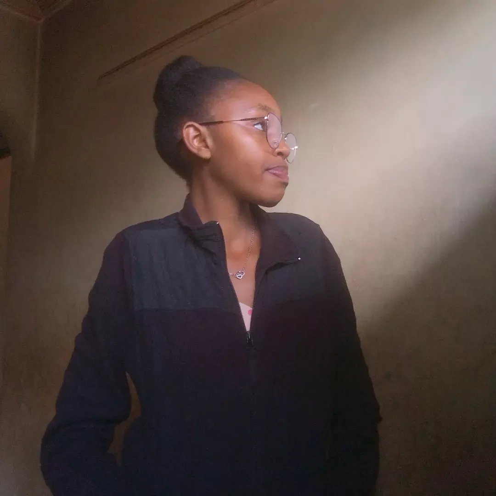

Quiet.
Not an absence of words, but a presence that never needs to announce itself.

A day worth celebrating
A little world of her own.
Celebrating the quiet beauty of being unapologetically you.
Quiet by nature, observant by heart, and warm in ways that words may not always capture. A woman with a strong sense of self, a mind of her own, and a beautiful appreciation for peace.
Not an absence of words, but a presence that never needs to announce itself.
She sees the small details and unspoken moods that others pass right by.
A warmth that is felt long before it is explained.
She knows who she is, and she never needs permission to be it.
Calm is something she values, and something she quietly protects.
No dates. No particular order. Just frames worth keeping. Tap any photo to see it larger.
WMB Tape Girl 🌾
HER 😚🎀
Just staying true 😇
Scorpio ♏
The Older I Get
Alan Jackson
Her favourite song. Press play whenever the moment feels right.